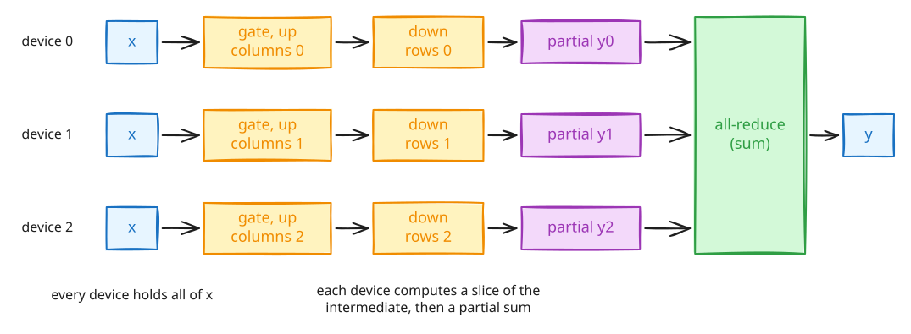
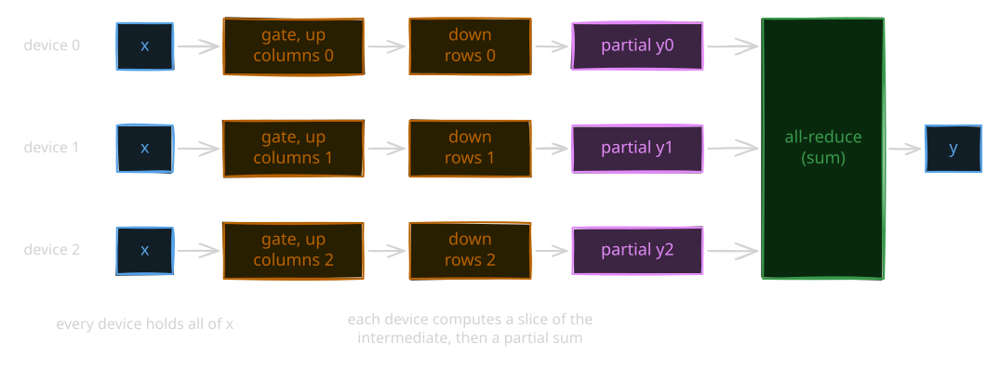

2.2 A tensor-parallel model


This section splits your SmolLM2 from Chapter 1 across three devices with tensor parallelism, the strategy servers use to run a model too big or too slow for one GPU. The model code doesn’t change. You change where its weights live, and MAX runs every layer on all three devices and adds the communication. Then you check that the logits match the single-device model’s.
Show the setup 31 lines
import logging
import time
import warnings
import numpy as np
import plotly.graph_objects as go
from max import functional as F
from max.driver import CPU
from max.dtype import DType
from max.nn.common_layers.linear import col_parallel, row_parallel
from max.pipelines import AutoTokenizer
from max.tensor import Tensor, default_device, default_dtype
from max.tensor.sharding import (
DeviceMapping,
DeviceMesh,
Replicated,
auto_reshard,
visualize,
)
from max.tensor.tensor import TensorType
from minillm import viz
from minillm.config import MODEL_ID, LlamaConfig
from minillm.model import LlamaForCausalLM, load_model
from minillm.weights import load_checkpoint
logging.getLogger("max").setLevel(logging.ERROR)
warnings.filterwarnings("ignore", message="The eager interpreter failed")
config = LlamaConfig.from_pretrained()
weights = load_checkpoint()
The plan
Section 2.1 showed the pattern: a column-parallel layer followed by a row-parallel layer needs one all-reduce. Each SmolLM2 layer has two such pairs:
| Block | Column parallel (split outputs) | Row parallel (split inputs) |
|---|---|---|
| Attention | q_proj, k_proj, v_proj | o_proj |
| MLP | gate_proj, up_proj | down_proj |


Splitting q_proj’s outputs three ways gives each device 3 of the 9 query
heads, and splitting k_proj and v_proj gives each device 1 of the 3
key/value heads, the one those queries share under grouped-query attention
(Section 1.5). So attention runs
on each device independently, on its own heads. The embedding, the norms, and
the LM head stay whole on every device (replicated).
max.nn provides col_parallel and row_parallel, which change a Linear
layer’s weight placement on the mesh axis you name:
from __future__ import annotations
from max.nn.common_layers.linear import col_parallel, row_parallel
from minillm.model import LlamaForCausalLM
def tensor_parallel(
model: LlamaForCausalLM, axis: str = "tp"
) -> LlamaForCausalLM:
"""Shards every layer's projections across mesh axis ``axis``."""
for layer in model.model.layers:
attn, mlp = layer.self_attn, layer.mlp
for linear in (
attn.q_proj,
attn.k_proj,
attn.v_proj,
mlp.gate_proj,
mlp.up_proj,
):
col_parallel(linear, axis)
for linear in (attn.o_proj, mlp.down_proj):
row_parallel(linear, axis)
return model
Saved to minillm/parallel.py.
Build the model on a mesh
Build the model inside default_device(mesh) so its weights are created on
the mesh, apply the plan, and load the checkpoint. load_state_dict cuts
each weight into the shards its placement asks for:
mesh = DeviceMesh((CPU(),) * 3, (3,), ("tp",))
with F.lazy(), default_device(mesh), default_dtype(DType.float32):
tp_model = tensor_parallel(LlamaForCausalLM(config))
tp_model.load_state_dict(
{**weights, "lm_head.weight": weights["model.embed_tokens.weight"]}
)
visualize(tp_model.model.layers[0].self_attn.q_proj.weight)
visualize(tp_model.model.layers[0].self_attn.o_proj.weight)
DType.float32 [576, 576] with DeviceMapping(DeviceMesh(tp=3), [Sharded(axis=0)])
┌──────────────┐ tensor[:, :]
│ device 0 │ ├── tp=0 device 0 - tensor[:192, :]
│ [:192, :] │ ├── tp=1 device 1 - tensor[192:384, :]
├──────────────┤ └── tp=2 device 2 - tensor[384:, :]
│ device 1 │
│ [192:384, :] │
├──────────────┤
│ device 2 │
│ [384:, :] │
└──────────────┘
DType.float32 [576, 576] with DeviceMapping(DeviceMesh(tp=3), [Sharded(axis=1)])
┌──────────────┬──────────────┬──────────────┐ tensor[:, :]
│ device 0 │ device 1 │ device 2 │ ├── tp=0 device 0 - tensor[:, :192]
│ [:, :192] │ [:, 192:384] │ [:, 384:] │ ├── tp=1 device 1 - tensor[:, 192:384]
└──────────────┴──────────────┴──────────────┘ └── tp=2 device 2 - tensor[:, 384:]
Read the head assignment straight from the shards: each device’s slice of
q_proj holds whole query heads, and its slice of k_proj holds the
key/value head those queries share. Hover over a box to see its device:
Show the code 43 lines
attn = tp_model.model.layers[0].self_attn
rows = {
"query heads": attn.q_proj.weight,
"key/value heads": attn.k_proj.weight,
}
device_colors = [viz.BLUE, viz.ORANGE, viz.AQUA]
fig = go.Figure()
for y, (name, weight) in enumerate(rows.items()):
head = 0
for device, shard in enumerate(weight.local_shards):
for _ in range(int(shard.shape[0]) // config.head_dim):
width = (
9 / int(weight.shape[0]) * config.head_dim
) # key/value heads span their group
fig.add_trace(
go.Bar(
x=[width],
base=[head * width],
y=[name],
orientation="h",
width=0.6,
marker=dict(
color=device_colors[device],
line=dict(color=viz.SURFACE, width=3),
),
text=f"{'q' if y == 0 else 'kv'}{head}",
textposition="inside",
insidetextanchor="middle",
name=f"device {device}",
legendgroup=str(device),
showlegend=y == 0 and head % 3 == 0,
hovertemplate=f"{name[:-1]} {head} on device {device}<extra></extra>",
)
)
head += 1
fig.update_layout(
title="Layer 0's attention heads on a 3-device mesh",
height=260,
barmode="overlay",
xaxis=dict(visible=False),
yaxis=dict(autorange="reversed", showgrid=False),
)
viz.show(fig)
Linear stores its weight as [out, in], so column parallel splits axis 0
and row parallel splits axis 1. Each device now holds a third of every
projection, which is most of the model:
def elements_on_device_0(model) -> int:
total = 0
for _, p in model.parameters:
shard = p.local_shards[0] if p.is_distributed else p
total += int(np.prod([int(d) for d in shard.shape]))
return total
total = sum(p.num_elements() for _, p in tp_model.parameters)
print(
f"whole model: {total / 1e6:.0f}M values, device 0 holds {elements_on_device_0(tp_model) / 1e6:.0f}M"
)
whole model: 163M values, device 0 holds 92M
The whole-model count is above SmolLM2’s 135M because the model ties its LM head to the embedding, and the count includes that 28M-value weight twice. Broken down by part, for the single-device model and for each device of the mesh:
Show part 43 lines
def part(name: str) -> str:
for key, label in [
("embed_tokens", "embedding"),
("lm_head", "LM head"),
("self_attn", "attention"),
("mlp", "MLP"),
]:
if key in name:
return label
return "norms"
parts = ["embedding", "LM head", "attention", "MLP", "norms"]
columns = ["one device", "mesh device 0", "mesh device 1", "mesh device 2"]
counts = {p: [0] * 4 for p in parts}
for name, param in tp_model.parameters:
counts[part(name)][0] += param.num_elements()
shards = param.local_shards if param.is_distributed else [param] * 3
for device, shard in enumerate(shards):
counts[part(name)][device + 1] += int(
np.prod([int(d) for d in shard.shape])
)
fig = go.Figure(
[
go.Bar(
x=columns,
y=np.array(values) / 1e6,
name=p,
marker_color=color,
hovertemplate=p + ": %{y:.1f}M values<extra>%{x}</extra>",
)
for (p, values), color in zip(counts.items(), viz.SERIES)
]
)
fig.update_layout(
title="Parameter values per device",
barmode="stack",
height=420,
yaxis_title="millions of values",
legend_traceorder="normal",
)
viz.show(fig)
The replicated embedding and LM head (28M values each) keep device 0 well above a third. Large models also split those across the vocabulary.
Run it
The input token IDs are replicated: every device sees the whole prompt. Run
the model with auto_reshard(mode="warn") to see each collective MAX
inserts:
tokenizer = AutoTokenizer(MODEL_ID)
ids = tokenizer(["The capital of France is"])["input_ids"][0]
tokens = Tensor(np.array([ids]), device=DeviceMapping(mesh, (Replicated(),)))
start = time.perf_counter()
with warnings.catch_warnings(record=True) as caught:
warnings.simplefilter("always")
with auto_reshard(mode="warn"):
tp_logits = tp_model(tokens).to_numpy()
reshards = [str(w.message) for w in caught if "reshards" in str(w.message)]
print(
f"forward pass in {time.perf_counter() - start:.0f} s, {len(reshards)} collectives inserted"
)
assert len(reshards) == 2 * config.num_hidden_layers
print(reshards[0])
forward pass in 215 s, 60 collectives inserted
add(lhs, rhs) reshards rhs
lhs : float32[1, 5, 576]@mesh(tp=3){"tp":R}
rhs : float32[1, 5, 576]@mesh(tp=3){"tp":P}
region : auto_reshard(DEFAULT_TRANSITIONS, mode="warn")
decided per mesh axis
axis lhs rhs -> out collective bytes status
"tp" lhs{R->P} rhs{P} -> P keep_one_copy(lhs) 60 not allowed
lhs{R->S1} rhs{P->S1} -> S1 local_slice(lhs), reduce_scatter(rhs) 7740 not allowed
lhs{R->S2} rhs{P->S2} -> S2 local_slice(lhs), reduce_scatter(rhs) 7740 not allowed
lhs{R} rhs{P->R} -> R allreduce(rhs) 15360 chosen, reshards rhs
result lhs{"tp":R} rhs{"tp":R} -> {"tp":R}
rhs = transfer_to(rhs, DeviceMapping(mesh, (R,)))
with auto_reshard(mode="silent"):
with auto_reshard(ALL_TRANSITIONS, mode="silent"): # also allows the cheaper rows above
at minillm/model.py:43 in forward()
That makes 60 collectives for 30 layers, two all-reduces per layer: one where
the output of attention’s row-parallel o_proj meets the residual addition,
and one where the MLP’s down_proj output does. Each residual addition needs
the full value, so a column-then-row layout needs both. Everything else,
including attention itself, ran on each device without communication. The
forward pass is slow because the simulated mesh runs eagerly, one operation at
a time, on one CPU; its time says nothing about real hardware.
Check it
The sharded model must produce the same logits as the single-device model from Section 1.6:
single = load_model(config, weights, CPU()).compile(
TensorType(DType.int64, ("batch", "seq_len"), device=CPU())
)
reference = single(Tensor(np.array([ids]), device=CPU())).to_numpy()
print(f"max difference {np.abs(tp_logits - reference).max():.1e}")
print("next token:", repr(tokenizer.decode([int(tp_logits[0, -1].argmax())])))
assert (
np.abs(tp_logits - reference).max() < 1e-3
and tp_logits[0, -1].argmax() == reference[0, -1].argmax()
)
max difference 7.0e-05
next token: ' Paris'
The logits agree to within 1e-4, the size of a change in summation order:
the all-reduce adds three partial sums where one device computed one full
sum. On real hardware, replace the mesh’s CPU() entries with
Accelerator(0), Accelerator(1), and Accelerator(2), and nothing else
changes. max serve splits models across GPUs too: pass
--devices gpu:0,1,2 to use three. MAX’s Llama implementation, which serves
SmolLM2, uses the same column-then-row layout, built from the older
tensor-parallel layers in max.nn.legacy instead of distributed tensors, and
it also splits the embedding and the LM head across the vocabulary.
Simulation answers is it correct? cheaply. Whether a layout is fast depends on the hardware: an all-reduce over NVLink costs microseconds, over PCIe or a network much more, and for a model this small on real GPUs the communication would cost more than it saves. The handbook’s distributed inference and parallelism strategies pages discuss when each layout pays off.
Exercises
- Run on a 9-device mesh, one query head per device. What happens to the key/value heads, which only split three ways?
- Shard the embedding by vocabulary (rows) and the LM head to match. Which collectives does MAX add, and how much memory does device 0 save?
- Add a
dpaxis for a 2 × 3 mesh and run a batch of two prompts with the batch split alongdp. Check both rows against the single-device model.
Next
Chapter 3 goes below the operations: you write a kernel in Mojo and call it from your model.